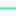

<!doctype html>
<html lang="en">
    
<head>
    <p align="center"></p>    
<meta charset="utf-8">
        <meta http-equiv="X-UA-Compatible" content="IE=edge">
        
<meta name="viewport" content="initial-scale=1,user-scalable=no,maximum-scale=1,width=device-width">
        
<meta name="mobile-web-app-capable" content="yes">
        <meta name="apple-mobile-web-app-capable" content="yes">
        
<link rel="stylesheet" href="css/leaflet.css" /><link rel="stylesheet" href="http://maxcdn.bootstrapcdn.com/font-awesome/4.6.1/css/font-awesome.min.css"><link rel="stylesheet" href="css/L.Control.Locate.min.css" />
        
<link rel="stylesheet" type="text/css" href="css/qgis2web.css">
        <link rel="stylesheet" href="css/MarkerCluster.css" />
        <link rel="stylesheet" href="css/MarkerCluster.Default.css" />
        
<link rel="stylesheet" href="css/leaflet-search.css" />
        <link rel="stylesheet" href="http://k4r573n.github.io/leaflet-control-osm-geocoder/Control.OSMGeocoder.css" />
       
<link rel="stylesheet" href="css/leaflet.draw.css" />
        <link rel="stylesheet" href="css/leaflet.measurecontrol.css" />
        <script src="js/leaflet.js"></script><script src="js/L.Control.Locate.min.js"></script>
        
<script src="js/leaflet-heat.js"></script>
        <script src="js/leaflet.rotatedMarker.js"></script>
        <script src="js/OSMBuildings-Leaflet.js"></script>
        <script src="js/leaflet-hash.js"></script>
        
<script src="js/Autolinker.min.js"></script>
        <script src="http://k4r573n.github.io/leaflet-control-osm-geocoder/Control.OSMGeocoder.js"></script>
        <script src="js/leaflet.draw.js"></script>
        
<script src="js/leaflet.measurecontrol.js"></script>
        <script src="js/leaflet.markercluster.js"></script>
        <script src="js/leaflet-search.js"></script>
        <style>
        html, 
body, #map {
            width: 100%;
            height: 100%;
            padding: 0;
            margin: 0;
        }
        </style>
        <title></title>
    </head>
    <body>
        <div id="map">
        
</div>
        <script src="data/json_PARSEL0.js"></script>
        <script src="data/json_YELALAN1.js"></script>
        <script src="data/json_SOSYALALANLAR2.js"></script>
        <script src="data/json_DOGALGAZ3.js"></script>
        
<script src="data/json_ATIKSUYAGMURSUYU4.js"></script>
        <script src="data/json_MESUYU5.js"></script>
        <script>
        var highlightLayer;
        function highlightFeature(e) {
            highlightLayer = e.target;

            
if (e.target.feature.geometry.type === 'LineString') {
              highlightLayer.setStyle({
                color: '#ffff00',
              });
            } else {
              highlightLayer.setStyle({
                fillColor: '#ffff00',
                
fillOpacity: 1
              });
            }
        }
        L.ImageOverlay.include({
            getBounds: function () {
                return this._bounds;
            }
        });
        var map = L.map('map', {
            measureControl:true,
            
zoomControl:true, maxZoom:28, minZoom:1
        })
        var hash = new L.Hash(map);
        map.attributionControl.addAttribution('<a href="https://github.com/tomchadwin/qgis2web" target="_blank">qgis2web</a>');
        L.control.locate().addTo(map);
        
var feature_group = new L.featureGroup([]);
        var bounds_group = new L.featureGroup([]);
        var raster_group = new L.LayerGroup([]);
        var basemap0 = L.tileLayer('http://{s}.tile.openstreetmap.org/{z}/{x}/{y}.png', {
            attribution: '&copy; <a href="http://openstreetmap.org">OpenStreetMap</a> contributors,<a href="http://creativecommons.org/licenses/by-sa/2.0/">CC-BY-SA</a>',
            maxZoom: 28
        });
        basemap0.addTo(map);
        function setBounds() {
            if (bounds_group.getLayers().length) {
                map.fitBounds(bounds_group.getBounds());
            }
            map.setMaxBounds(map.getBounds());
        }
        function geoJson2heat(geojson, weight) {
          return geojson.features.map(function(feature) {
            return [
              feature.geometry.coordinates[1],
              feature.geometry.coordinates[0],
              feature.properties[weight]
            ];
          });
        }
        function pop_PARSEL0(feature, layer) {
            layer.on({
                mouseout: function(e) {
                    layer.setStyle(doStylePARSEL0(feature));

                },
                mouseover: highlightFeature,
            });
            var popupContent = '<table><tr><th scope="row">ADA</th><td>' + (feature.properties['ADA'] !== null ? Autolinker.link(String(feature.properties['ADA'])) : '') + '</td></tr><tr><th scope="row">PARSEL</th><td>' + (feature.properties['PARSEL'] !== null ? Autolinker.link(String(feature.properties['PARSEL'])) : '') + '</td></tr><tr><th scope="row">MÜLKİYET</th><td>' + (feature.properties['MÜLKİYET'] !== null ? Autolinker.link(String(feature.properties['MÜLKİYET'])) : '') + '</td></tr><tr><th scope="row">FONKSİYON</th><td>' + (feature.properties['FONKSİYON'] !== null ? Autolinker.link(String(feature.properties['FONKSİYON'])) : '') + '</td></tr><tr><th scope="row">ALANI</th><td>' + (feature.properties['ALANI'] !== null ? Autolinker.link(String(feature.properties['ALANI'])) : '') + '</td></tr></table>';
            layer.bindPopup(popupContent);
        }

        function doStylePARSEL0(feature) {
            return {
                weight: 1.04,
                color: '#a6a6a6',
                fillColor: '#d9e5c9',
                dashArray: '',
                lineCap: 'square',
                lineJoin: 'bevel',
                opacity: 0.65,
                fillOpacity: 0.65
            };
        }
        map.createPane('pane_PARSEL0');
        map.getPane('pane_PARSEL0').style.zIndex = 601;
        var json_PARSEL0JSON = new L.geoJson(json_PARSEL0, {
            pane: 'pane_PARSEL0',
            onEachFeature: pop_PARSEL0,
            style: doStylePARSEL0
        });
        bounds_group.addLayer(json_PARSEL0JSON);
        feature_group.addLayer(json_PARSEL0JSON);
        function pop_YELALAN1(feature, layer) {
            layer.on({
                mouseout: function(e) {
                    layer.setStyle(doStyleYELALAN1(feature));

                },
                mouseover: highlightFeature,
            });
            var popupContent = '<table><tr><th scope="row">FONKSİYON</th><td>' + (feature.properties['FONKSİYON'] !== null ? Autolinker.link(String(feature.properties['FONKSİYON'])) : '') + '</td></tr><tr><th scope="row">ALANI</th><td>' + (feature.properties['ALANI'] !== null ? Autolinker.link(String(feature.properties['ALANI'])) : '') + '</td></tr></table>';
            layer.bindPopup(popupContent);
        }

        function doStyleYELALAN1(feature) {
            return {
                weight: 1.04,
                color: '#c6c6c6',
                fillColor: '#b8ee70',
                dashArray: '',
                lineCap: 'square',
                lineJoin: 'bevel',
                opacity: 0.9,
                fillOpacity: 0.9
            };
        }
        map.createPane('pane_YELALAN1');
        map.getPane('pane_YELALAN1').style.zIndex = 602;
        var json_YELALAN1JSON = new L.geoJson(json_YELALAN1, {
            pane: 'pane_YELALAN1',
            onEachFeature: pop_YELALAN1,
            style: doStyleYELALAN1
        });
        bounds_group.addLayer(json_YELALAN1JSON);
        feature_group.addLayer(json_YELALAN1JSON);
        function pop_SOSYALALANLAR2(feature, layer) {
            layer.on({
                mouseout: function(e) {
                    layer.setStyle(doStyleSOSYALALANLAR2(feature));

                },
                mouseover: highlightFeature,
            });
            var popupContent = '<table><tr><th scope="row">ADA</th><td>' + (feature.properties['ADA'] !== null ? Autolinker.link(String(feature.properties['ADA'])) : '') + '</td></tr><tr><th scope="row">PARSEL</th><td>' + (feature.properties['PARSEL'] !== null ? Autolinker.link(String(feature.properties['PARSEL'])) : '') + '</td></tr><tr><th scope="row">MÜLKİYET</th><td>' + (feature.properties['MÜLKİYET'] !== null ? Autolinker.link(String(feature.properties['MÜLKİYET'])) : '') + '</td></tr><tr><th scope="row">FONKSİYON</th><td>' + (feature.properties['FONKSİYON'] !== null ? Autolinker.link(String(feature.properties['FONKSİYON'])) : '') + '</td></tr><tr><th scope="row">ALAN</th><td>' + (feature.properties['ALAN'] !== null ? Autolinker.link(String(feature.properties['ALAN'])) : '') + '</td></tr></table>';
            layer.bindPopup(popupContent);
        }

        function doStyleSOSYALALANLAR2(feature) {
            return {
                weight: 1.04,
                color: '#626262',
                fillColor: '#0560df',
                dashArray: '',
                lineCap: 'square',
                lineJoin: 'bevel',
                opacity: 0.475215686275,
                fillOpacity: 0.475215686275
            };
        }
        map.createPane('pane_SOSYALALANLAR2');
        map.getPane('pane_SOSYALALANLAR2').style.zIndex = 603;
        var json_SOSYALALANLAR2JSON = new L.geoJson(json_SOSYALALANLAR2, {
            pane: 'pane_SOSYALALANLAR2',
            onEachFeature: pop_SOSYALALANLAR2,
            style: doStyleSOSYALALANLAR2
        });
        bounds_group.addLayer(json_SOSYALALANLAR2JSON);
        feature_group.addLayer(json_SOSYALALANLAR2JSON);
        function pop_DOGALGAZ3(feature, layer) {
            layer.on({
                mouseout: function(e) {
                    layer.setStyle(doStyleDOGALGAZ3(feature));

                },
                mouseover: highlightFeature,
            });
            var popupContent = '<table><tr><th scope="row">İmalat adı</th><td>' + (feature.properties['İmalat adı'] !== null ? Autolinker.link(String(feature.properties['İmalat adı'])) : '') + '</td></tr><tr><th scope="row">Uzunluk_m</th><td>' + (feature.properties['Uzunluk_m'] !== null ? Autolinker.link(String(feature.properties['Uzunluk_m'])) : '') + '</td></tr></table>';
            layer.bindPopup(popupContent);
        }

        function doStyleDOGALGAZ3(feature) {
            return {
                weight: 2.4,
                color: '#c5cb4b',
                dashArray: '',
                lineCap: 'square',
                lineJoin: 'bevel',
                opacity: 1.0
            };
        }
        map.createPane('pane_DOGALGAZ3');
        map.getPane('pane_DOGALGAZ3').style.zIndex = 604;
        var json_DOGALGAZ3JSON = new L.geoJson(json_DOGALGAZ3, {
            pane: 'pane_DOGALGAZ3',
            onEachFeature: pop_DOGALGAZ3,
            style: doStyleDOGALGAZ3
        });
        bounds_group.addLayer(json_DOGALGAZ3JSON);
        function pop_ATIKSUYAGMURSUYU4(feature, layer) {
            layer.on({
                mouseout: function(e) {
                    layer.setStyle(doStyleATIKSUYAGMURSUYU4(feature));

                },
                mouseover: highlightFeature,
            });
            var popupContent = '<table><tr><th scope="row">İmalat_adı</th><td>' + (feature.properties['İmalat_adı'] !== null ? Autolinker.link(String(feature.properties['İmalat_adı'])) : '') + '</td></tr><tr><th scope="row">Uzunluk_m</th><td>' + (feature.properties['Uzunluk_m'] !== null ? Autolinker.link(String(feature.properties['Uzunluk_m'])) : '') + '</td></tr></table>';
            layer.bindPopup(popupContent);
        }

        function doStyleATIKSUYAGMURSUYU4(feature) {
            return {
                weight: 2.4,
                color: '#48b0bd',
                dashArray: '',
                lineCap: 'square',
                lineJoin: 'bevel',
                opacity: 1.0
            };
        }
        map.createPane('pane_ATIKSUYAGMURSUYU4');
        map.getPane('pane_ATIKSUYAGMURSUYU4').style.zIndex = 605;
        var json_ATIKSUYAGMURSUYU4JSON = new L.geoJson(json_ATIKSUYAGMURSUYU4, {
            pane: 'pane_ATIKSUYAGMURSUYU4',
            onEachFeature: pop_ATIKSUYAGMURSUYU4,
            style: doStyleATIKSUYAGMURSUYU4
        });
        bounds_group.addLayer(json_ATIKSUYAGMURSUYU4JSON);
        function pop_MESUYU5(feature, layer) {
            layer.on({
                mouseout: function(e) {
                    layer.setStyle(doStyleMESUYU5(feature));

                },
                mouseover: highlightFeature,
            });
            var popupContent = '<table><tr><th scope="row">İmalat_adı</th><td>' + (feature.properties['İmalat_adı'] !== null ? Autolinker.link(String(feature.properties['İmalat_adı'])) : '') + '</td></tr><tr><th scope="row">Uzunluk</th><td>' + (feature.properties['Uzunluk'] !== null ? Autolinker.link(String(feature.properties['Uzunluk'])) : '') + '</td></tr></table>';
            layer.bindPopup(popupContent);
        }

        function doStyleMESUYU5(feature) {
            return {
                weight: 2.0,
                color: '#50f1b1',
                dashArray: '',
                lineCap: 'square',
                lineJoin: 'bevel',
                opacity: 1.0
            };
        }
        map.createPane('pane_MESUYU5');
        map.getPane('pane_MESUYU5').style.zIndex = 606;
        var json_MESUYU5JSON = new L.geoJson(json_MESUYU5, {
            pane: 'pane_MESUYU5',
            onEachFeature: pop_MESUYU5,
            style: doStyleMESUYU5
        });
        bounds_group.addLayer(json_MESUYU5JSON);
        raster_group.addTo(map);
        feature_group.addTo(map);
        var osmGeocoder = new L.Control.OSMGeocoder({
            collapsed: false,
            position: 'topright',
            text: 'Ada-parsel ara',
        });
        osmGeocoder.addTo(map);
        var baseMaps = {'OSM': basemap0};
        L.control.layers(baseMaps,{' İÇMESUYU': json_MESUYU5JSON,' ATIKSU YAGMURSUYU': json_ATIKSUYAGMURSUYU4JSON,' DOGALGAZ': json_DOGALGAZ3JSON,' SOSYAL ALANLAR': json_SOSYALALANLAR2JSON,' YEŞİL ALAN': json_YELALAN1JSON,' PARSEL': json_PARSEL0JSON,},{collapsed:false}).addTo(map);
        setBounds();
        map.addControl(new L.Control.Search({
            layer: feature_group,
            initial: false,
            hideMarkerOnCollapse: true,
            propertyName: 'ADA'}));
        </script>
    </body>
</html>
